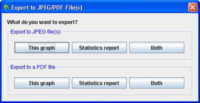

Dialog to save the file
You can export the currently displayed graph and/or the Statistics report to JPEG or PDF file(s). To initiate the export, click the toolbar button (). The Export to JPEG/PDF File(s) dialog will appear.

In the above dialog, you can choose to export the graph, the Statistics report or both to JPEG or PDF file(s). After clicking a button in the dialog, you will see another dialog like the one below, which allows you to save the file.
Dialog to save the file
If you choose to export Both to JPEG file(s), you will be prompted to save two files separately, one for the graph and the other for the report. If you choose any other option, you will be prompted to save only one file. The last location you chose to save a file here will be remembered by the program.